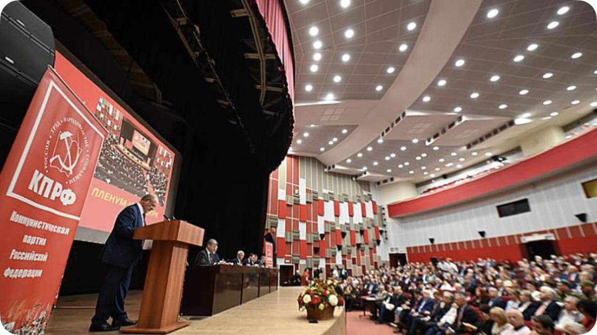
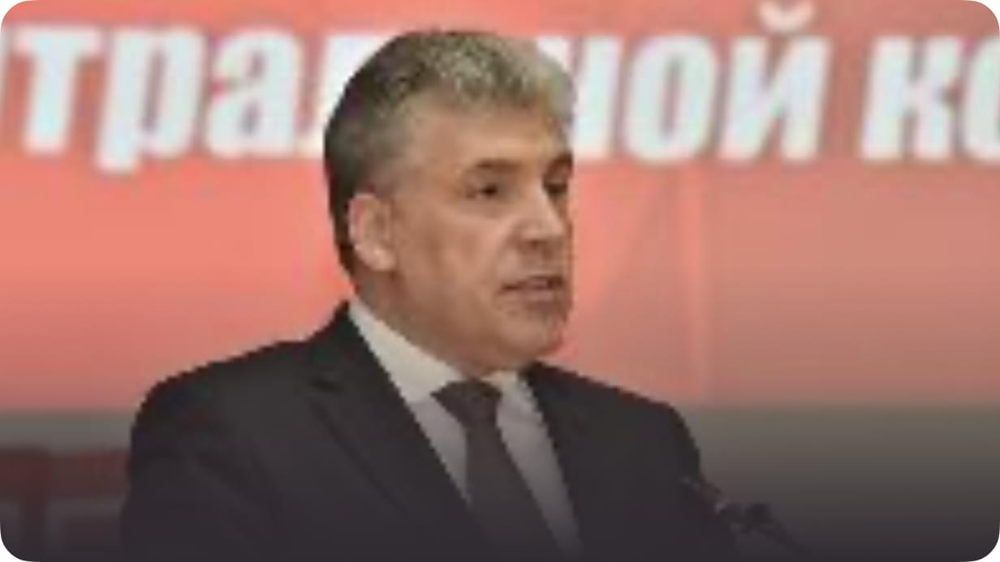

В Подмосковье прошёл VI (майский) Пленум Центрального Комитета и ЦКРК КПРФ
27 мая 2023 года состоялся очередной VI (майский) Пленум Центрального Комитета и Центральной Контрольно-Ревизионной Комиссии КПРФ. В его работе приняли участие члены руководящих органов партии, союзники по левопатриотическому фронту, участники специальной военной операции, бойцы народных дружин и групп самообороны из приграничных районов России, коммунисты, возглавляющие российские регионы, руководители народных предприятий.
Работа Пленума освещалась федеральными средствами массовой информации. Телеканал «Красная линия» вёл прямую трансляцию с места события. Проведению Пленума предшествовал семинар-совещание секретарей региональных комитетов КПРФ.
При открытии заседания была объявлена минута молчания. Присутствующие почтили память товарищей, коммунистов и комсомольцев, павших в борьбе с фашизмом в ходе специальной военной операции на Украине.
По сложившейся традиции Председатель Центрального Комитета Г.А. Зюганов в торжественной обстановке вручил партийные билеты молодым коммунистам и пожелал им успехов в борьбе за права трудового народа.
Состоялась церемония вручения дипломов и почётных знаков Ленинской премии ЦК КПРФ. В 2023 году её лауреатами стали: директор, художественный руководитель и главный дирижёр Государственного академического русского народного ансамбля «Россия» им. Л.Г. Зыкиной, заслуженный артист Российской Федерации Д.С. Дмитриенко, президент Регионального общественного фонда поддержки культуры, науки и образования «Петербургское наследие и перспектива» Г.А. Ефимова, член Президиума ЦК КПРФ, главный редактор газеты «Правда» Б.О. Комоцкий, член Центрального Комитета КПРФ Н.И. Сапожников, Председатель Центрального Комитета Приднестровской Коммунистической партии О.О. Хоржан.
VI (майский) совместный Пленум ЦК и ЦКРК рассмотрел следующую повестку дня:
1. О задачах КПРФ по борьбе с фашизмом и патриотическому воспитанию подрастающего поколения.
2. О задачах партии по укреплению народовластия и демократизации избирательного законодательства.
3. Об итогах финансово-хозяйственной деятельности ЦК КПРФ в 2022 году и утверждении Сметы поступления и расходования денежных средств ЦК КПРФ на 2023 год.
4. Об утверждении Сводного финансового отчёта КПРФ за 2022 год.
Доклад по первому вопросу «О задачах КПРФ по борьбе с фашизмом и патриотическому воспитанию подрастающего поколения» представил Председатель ЦК партии Г.А. Зюганов. Он показал, что советская эпоха наполнила особым смыслом естественное для человека чувство патриотизма, очистила его от разжигающей национализм буржуазной идеологии. Советский патриотизм был диалектически соединён с принципами интернационализма. С момента своего возрождения КПРФ настойчиво следует этой прогрессивной политике, считает её принципы и подходы ключевыми в деле гражданско-патриотического воспитания.
В докладе подчёркивается, что для победы в развязанной Западом войне против России нашему народу требуется мобилизация всех сил. Но классовый интерес мешает правящим кругам опереться на жизненно важный советский опыт. Это усиливает остроту угроз, вставших перед нашей страной. КПРФ настаивает на том, что смена буржуазной системы социализмом неизбежна, и предлагает свою созидательную программу ради возрождения и процветания Родины. В деле борьбы с фашизмом партия исходит из необходимости сплочения широких антифашистских сил и их международной солидарности.
В прениях по докладу выступили: В.О. Коновалов (Республика Хакасия), В.Н. Попков (Донецкая область, участник СВО), Х.М. Накаев (Чеченская Республика), Н.Н. Иванов (Курская область), Л.Г. Баранова-Гонченко (Союз писателей России), О.А. Слюсаренко (Запорожская область), Ю.П. Белов (г. Санкт-Петербург), А.А. Наумов (Московская область), В.И. Соболев (Движение в поддержку Армии, оборонной промышленности и военной науки), В.В. Обуховский (г. Москва), М.Н. Прусакова (Алтайский край), О.В. Слободченко (Ставропольский край, участник СВО).
Позицию Редакционной комиссии представил заместитель Председателя ЦК КПРФ Д.Г. Новиков. Участники Пленума приняли Постановление «О задачах КПРФ по борьбе с фашизмом и патриотическому воспитанию подрастающего поколения».
С докладом по второму вопросу повестки дня выступил член Президиума ЦК КПРФ Н.В. Коломейцев. Он отметил, что манипуляции правящих кругов подрывают доверие граждан к результатам выборов и избирательной системе в целом. В обществе усиливается отчуждение личности от государства. За последние годы с целью фальсификаций при проведении выборов внедряется практика многодневного и дистанционного электронного голосования, другие “новации”. Ситуация требует от коммунистов и их сторонников активных действий в целях защиты принципов демократии при проведении выборов.
Пленум принял Постановление «О задачах партии по укреплению народовластия и демократизации избирательного законодательства».
Заслушав доклад Управляющего делами Центрального Комитета партии Н.И. Осадчего, Пленум утвердил Отчёт об итогах финансово-хозяйственной деятельности ЦК КПРФ в 2022 году, Сводный финансовый отчёт КПРФ за 2022 год и Смету поступления и расходования денежных средств ЦК КПРФ на 2023 год.
Подводя итоги работы Пленума, Председатель ЦК КПРФ Г.А. Зюганов напомнил, что самой победной и успешной наша Родина была в период строительства социализма. Оценивая перспективы развития обстановки в стране и мире, он призвал к сплочению левопатриотических сил ради победы над неонацизмом, нацелил на активное отстаивание интересов трудового народа.
В ходе работы Пленума были продемонстрированы видеоматериалы телеканала «Красная линия». В их числе – специальный репортаж о праздновании Дня Пионерии и документальный фильм «Эти», вскрывающий суть власовщины и коллаборационизма.
Материалы VI (майского) совместного Пленума ЦК и ЦКРК КПРФ будут опубликованы в партийной печати.